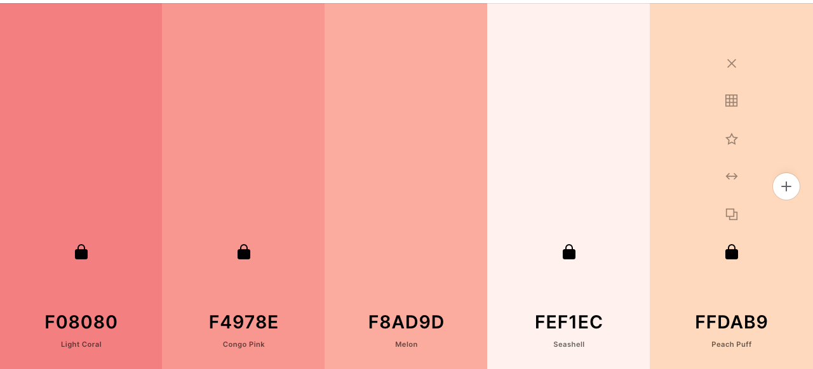
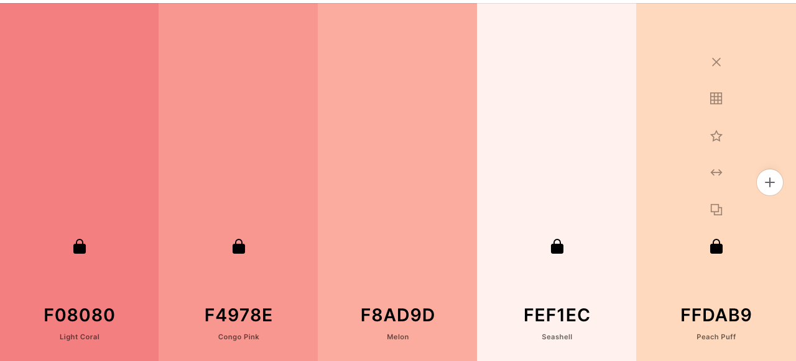

Color Scheme
Chosen Colors for the Site
All the font colors are going to be black as it blends nicely with the colors I have chosen for this site!
Chosen Colors for the Site
All the font colors are going to be black as it blends nicely with the colors I have chosen for this site!